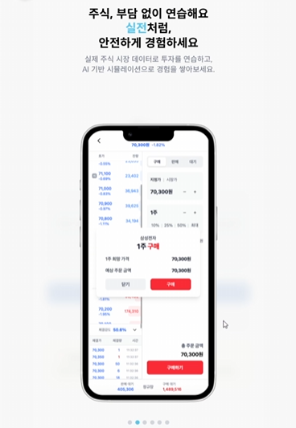
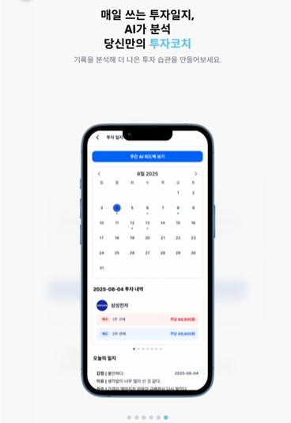
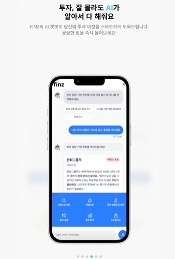
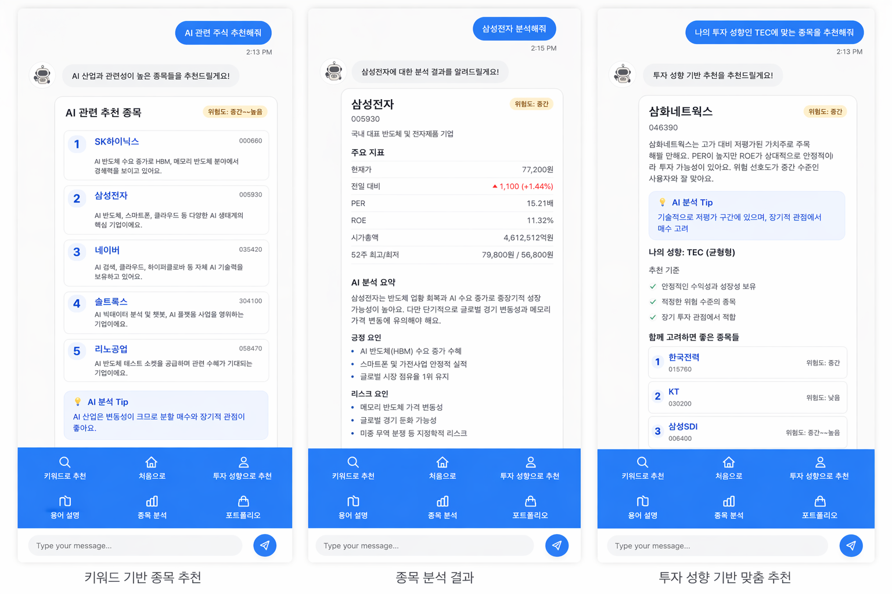
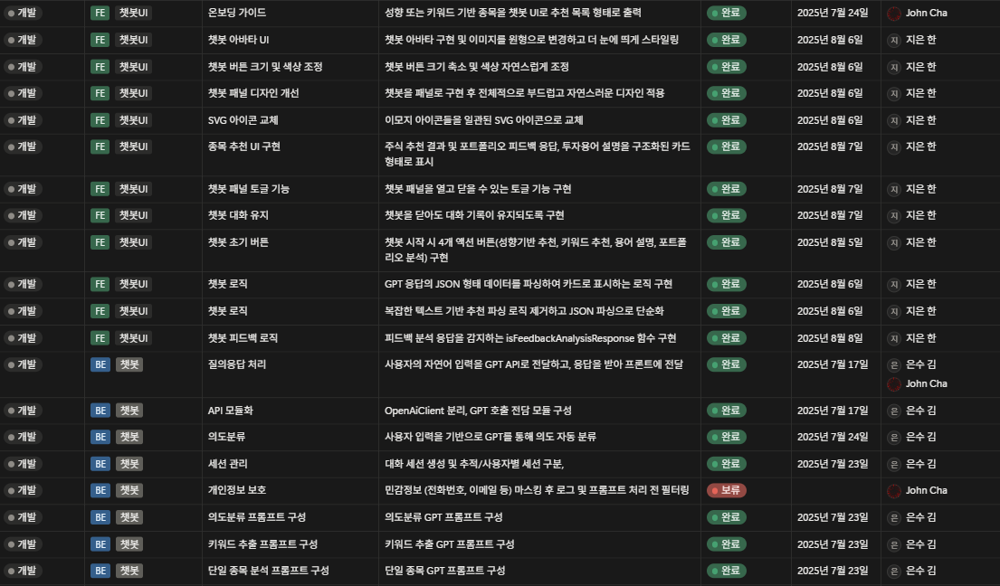
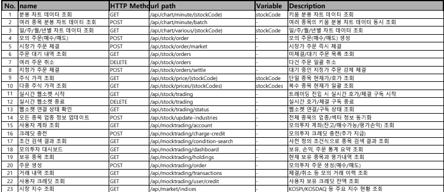
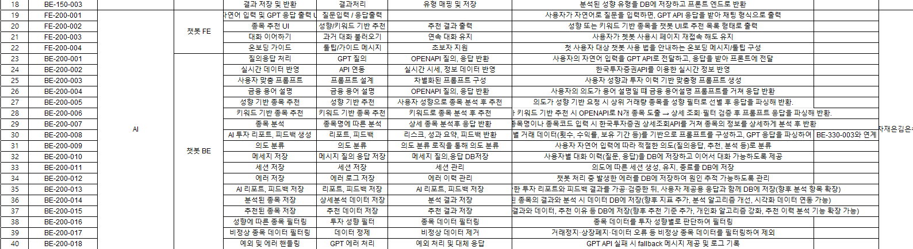
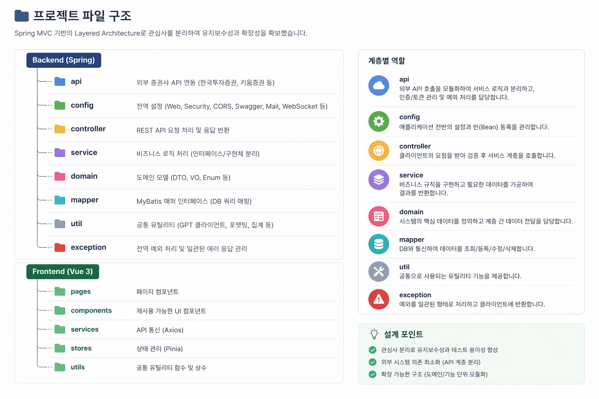

PROJECT DETAIL
투자 성향 진단부터 AI 추천·종목 분석·모의투자·피드백까지
학습과 실전이 연결되는 MZ세대 맞춤 금융 입문 플랫폼



투자자는 늘었지만,
이해하고 투자하는 사람은 적습니다.
투자 참여는 증가했지만, 정보 해석과 실전 경험 부족으로 실제 투자로 이어지지 않는 문제가 발생하고 있습니다.
FINZ는 8명이 개발한 MZ세대 맞춤 금융 입문 플랫폼입니다. 투자 성향 진단부터 AI 추천, 모의투자, 커뮤니티, 금융 퀴즈까지 학습과 실전이 연결되는 구조로 설계했습니다.
저는 그 중 AI 챗봇 백엔드 전체를 담당했습니다.
챗봇 백엔드 전체를 담당했습니다. 8가지 인텐트를 분류해 각 기능으로 분기하고, 의도 분류 → API 호출 → GPT 프롬프트 구성 → 응답 파싱 → 프론트 전송 → 결과·세션·메시지 저장까지 전체 처리 파이프라인을 설계했습니다.
모의투자 거래 데이터에서 거래 횟수, 보유 종목, 수익률을 추출해 입력값으로 가공하고, 사용자의 투자 성향과 행동 패턴을 반영한 포트폴리오 피드백을 생성하도록 구현했습니다.
대화가 단발로 끝나지 않도록 메시지·세션·추천 결과·에러 이력을 각각 분리 저장해, 이후 피드백과 모의투자 기능으로 이어질 수 있는 8개 테이블 구조를 설계했습니다.
프론트엔드와 연동할 때 API 명세를 먼저 정리하고 필드명·응답 형식을 고정한 뒤 팀원들과 공유해, 추천·분석 결과가 화면에 맞게 출력될 수 있도록 조율했습니다.

구현보다 먼저,
흐름과 데이터 구조를 팀과 함께 먼저 정리했습니다.
WBS, 기능 명세서, API 명세서, 다이어그램을 통해 역할을 나누고 연결 지점을 맞춘 뒤 개발을 진행했습니다.




8가지 인텐트 분류와 분기 처리
MESSAGE, RECOMMEND_PROFILE, RECOMMEND_KEYWORD, STOCK_ANALYZE, PORTFOLIO_ANALYZE, TERM_EXPLAIN, SESSION_END, UNKNOWN 8가지로 사용자 입력을 분류하고, 각 인텐트에 맞는 처리 로직으로 분기했습니다.
인텐트별 GPT 프롬프트 구성과 응답 파싱
인텐트마다 프롬프트를 다르게 구성하고, GPT 응답을 그대로 사용하지 않고 필수 필드를 검증한 뒤 DB 저장과 프론트 전송이 가능한 구조로 파싱했습니다. 파싱 실패 시에는 fallback 응답과 에러 로그를 남겨 처리가 끊기지 않도록 했습니다.
외부 주식 데이터 필터링과 추천 파이프라인
외부 API에서 받아온 종목 데이터를 그대로 쓰지 않고, 거래정지·상장폐지·누락 종목을 필터링한 뒤 투자 성향 조건에 맞는 종목만 GPT에 전달하도록 구성했습니다.
모의투자 데이터 기반 포트폴리오 피드백 생성
사용자가 포트폴리오 분석을 요청할 때 모의투자 거래 내역에서 거래 횟수·보유 종목·수익률을 추출해 GPT 입력값으로 가공하고, 투자 성향과 행동 패턴을 반영한 맞춤형 피드백을 생성했습니다.
세션 생성·유지·종료와 메시지 저장
사용자별 세션을 관리하고, 의도가 바뀔 때 기존 세션을 종료하거나 새 세션으로 전환하는 로직을 구현했습니다. 메시지와 세션 상태를 함께 저장해 연속 대화는 유지하면서 기능 간 문맥이 섞이지 않도록 처리했습니다.
추천·분석 결과 분리 저장과 8개 테이블 설계
추천 결과, 분석 데이터, 세션, 메시지, 에러 이력을 테이블을 나눠 저장해 이후 피드백·행동 분석·리포트로 확장할 수 있는 구조로 설계했습니다.
예외 처리와 에러 로그 관리
GPT 호출 실패, 외부 API 응답 지연, 파싱 오류를 상황별로 분기해 fallback 메시지를 반환하고, 에러 유형·메시지·발생 시각을 DB에 저장해 어떤 단계에서 실패했는지 추적할 수 있도록 구성했습니다.
GPT 응답이 항상 같은 형식으로 오지 않았습니다.
추천과 분석 기능은 결과를 DB에 저장해야 했기 때문에, 응답이 조금만 달라도 파싱이 실패하거나 저장 구조가 흔들릴 수 있었습니다.
프롬프트에서 응답 형식을 최대한 고정하고, 후처리 단계에서 필수 필드 존재 여부를 검증한 뒤 파싱하도록 분리했습니다. 파싱 실패 시에는 원문을 그대로 버리지 않고 fallback 응답과 로그를 남겨 흐름이 끊기지 않도록 처리했습니다.
추천, 분석, 일반 질의응답의 문맥이 서로 섞였습니다.
사용자가 연속해서 질문할 때 이전 대화의 의도가 다음 요청에도 남아 추천을 원하지 않았는데 추천 흐름으로 들어가거나, 반대로 분석 요청이 일반 답변처럼 처리되는 문제가 있었습니다.
사용자별 세션을 따로 관리하고, 의도 변경 시 기존 세션을 종료하거나 새로운 세션으로 전환하는 로직을 넣었습니다. 메시지 저장과 세션 상태를 함께 관리해 연속 대화는 유지하면서도 기능 흐름은 섞이지 않도록 정리했습니다.
외부 주식 데이터가 그대로는 추천 품질을 보장하지 못했습니다.
거래정지, 상장폐지, 데이터 누락처럼 추천에 쓰기 부적절한 종목이 섞이면 챗봇 결과 신뢰도가 바로 떨어질 수 있었습니다.
추천 전에 비정상 종목 데이터를 걸러내는 필터를 두고, 투자 성향별 조건에 맞는 종목만 다시 선별하도록 구성했습니다. 덕분에 GPT가 아무 종목이나 설명하는 구조가 아니라, 1차 정제된 데이터를 기반으로 추천하도록 흐름을 바꿀 수 있었습니다.
모의투자 데이터와 챗봇 분석 결과를 연결하는 기준이 필요했습니다.
포트폴리오 분석 기능은 단순 텍스트 응답이 아니라 사용자의 거래 이력, 보유 종목, 수익률 같은 데이터를 기준으로 해야 했기 때문에 챗봇 응답과 모의투자 데이터를 어떻게 연결할지 정리하는 과정이 필요했습니다.
모의투자에서 생성된 거래 데이터를 기준으로 분석용 입력값을 별도로 가공하고, 챗봇 응답은 다시 저장 가능한 구조로 분리했습니다. 그 결과 추천, 분석, 포트폴리오 피드백이 각각 따로 끝나는 것이 아니라 하나의 사용자 흐름 안에서 이어질 수 있도록 만들었습니다.
에러가 나도 사용자는 이유를 알 수 없었습니다.
GPT 호출 실패, 외부 API 응답 지연, 파싱 오류가 발생하면 백엔드에서는 문제를 알 수 있어도 사용자 입장에서는 그냥 “안 되는 챗봇”처럼 느껴질 수 있었습니다.
예외 상황별 fallback 메시지를 분리하고, 에러 로그는 DB에 저장해 원인 추적이 가능하도록 구성했습니다. 덕분에 사용자 경험은 최대한 유지하면서, 개발 단계에서는 어떤 단계에서 실패했는지 빠르게 확인할 수 있었습니다.
프론트엔드와 백엔드가 기대하는 응답 구조가 달랐습니다.
챗봇 기능은 응답 형태가 유동적이어서, 백엔드에서 내려주는 데이터와 프론트엔드에서 기대하는 화면 구조가 처음부터 정확히 맞지 않는 문제가 있었습니다.
이를 해결하기 위해 API 명세를 다시 정리하고, 필드 이름과 응답 형식을 고정한 뒤 팀원들과 공유했습니다. 이후에는 화면에 필요한 데이터 구조를 먼저 맞추고 백엔드 로직을 그에 맞게 보완하는 방식으로 협업했습니다.
백엔드에서는
기능 구현보다 데이터를 안정적으로 처리하는 구조가 더
중요했습니다.
응답을 만드는 것보다, 저장 가능한 형태로 바꾸는 일이 중요했습니다.
GPT 응답은 그대로 사용할 수 있는 데이터가 아니라, 형식이 조금만 달라져도 파싱과 저장이 실패할 수 있었습니다.
이 프로젝트를 통해 백엔드에서는 단순 응답 생성보다 응답을 검증하고, 필요한 필드만 추출해, 저장 가능한 구조로 정리하는 작업이 더 중요하다는 것을 배웠습니다.
테이블 분리는 이후 기능 확장과 직접 연결되었습니다.
메시지, 세션, 추천 결과, 분석 결과, 에러 로그를 하나로 저장하면 조회와 관리가 어려워지고 기능이 섞일 수 있었습니다.
그래서 데이터를 성격별로 분리해 저장하면서, DB 설계가 단순 저장이 아니라 이후 피드백, 리포트, 행동 분석까지 고려한 기반이 된다는 점을 이해하게 되었습니다.
세션 관리는 사용자 경험뿐 아니라 기능 안정성과도 연결됐습니다.
같은 사용자의 연속 질문에서 이전 의도가 남아 잘못된 기능으로 분기되는 문제를 직접 겪었습니다.
이를 통해 백엔드에서는 요청 하나만 처리하는 것이 아니라, 현재 세션 상태를 기준으로 어떤 기능을 실행할지 제어하는 역할도 중요하다는 것을 배웠습니다.
프론트엔드와 맞지 않는 응답은 결국 동작하지 않는 기능이었습니다.
백엔드에서 데이터를 내려줘도, 프론트엔드가 기대하는 필드명과 구조가 다르면 화면에서는 제대로 사용할 수 없었습니다.
그래서 API 명세와 응답 형식을 먼저 정리하며, 백엔드 개발자는 로직만 구현하는 것이 아니라, 다른 계층이 사용할 수 있는 형태로 계약을 맞추는 역할도 해야 한다는 점을 배웠습니다.
예외 처리는 디버깅을 위한 기능이기도 했습니다.
GPT 호출 실패, 외부 API 지연, 파싱 오류처럼 원인이 다른 문제들이 한 번에 섞여 발생했습니다.
이 과정에서 단순히 에러를 막는 것보다 어느 단계에서 왜 실패했는지 추적할 수 있도록 로그를 남기는 구조가 유지보수에 중요하다는 것을 체감했습니다.